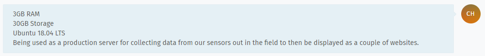
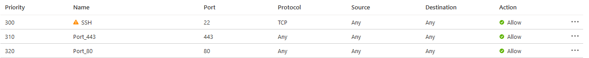
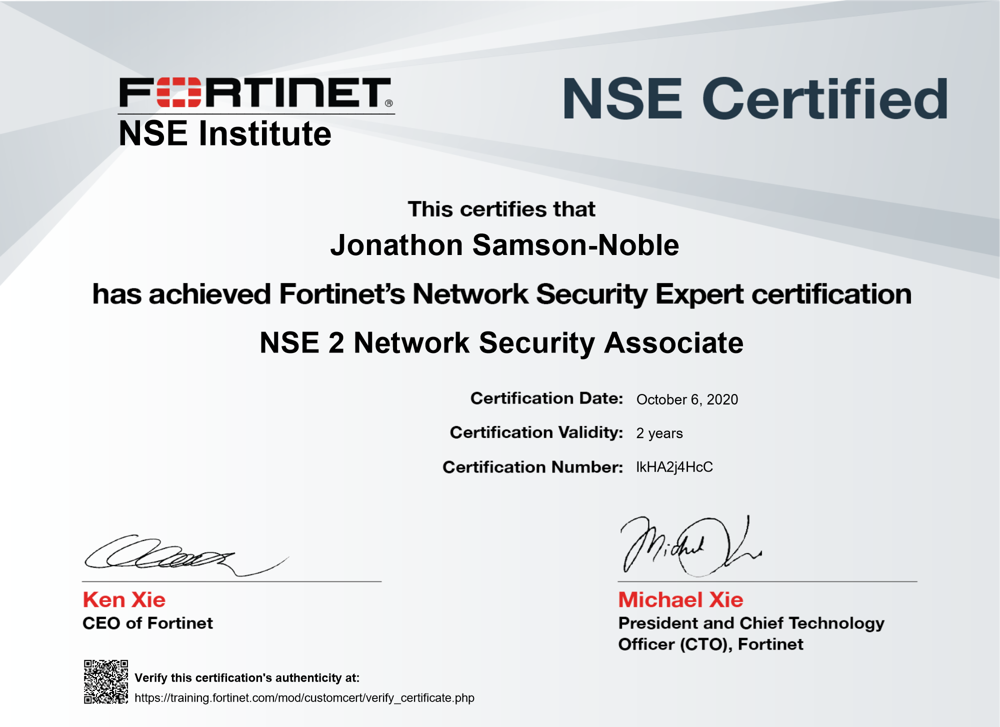
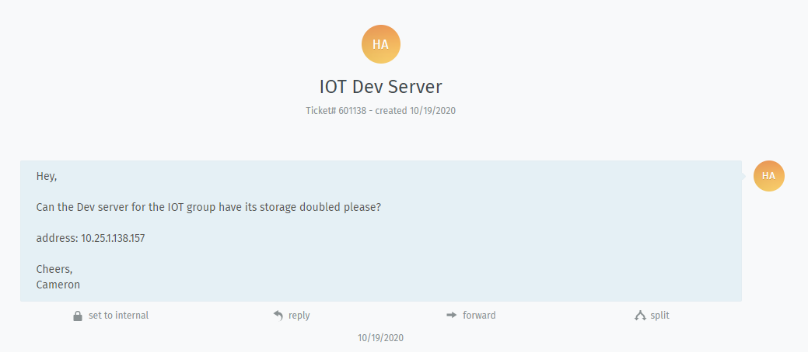
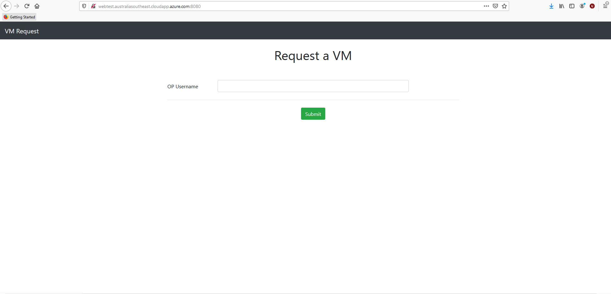

Week 1 20 — 26 July, 2020
Monday
I came in early on the first day in the new semester in order to talk to Adon to make sure that i was going to get Ops and security as my project group
one of my main goals this semester was to try and automate, which was something that was on my list of goals to achieve in project 1 but unfortunately couldn't achieve
The ops team was also informed that we would be migrating from onsite to Azure
Our main goal as a group was is to discover what services we are offering and then to determin if they are still need or can be retired, gitlab is a possible service will be retiring as it is mainly used purely for repos and op's gitlab doesn't have a great track record when it comes to uptime and reliability so instead students can just use github
Tuesday
After learning about the azure migration that was going to take place at otago polytechnic i decided i would see if i could take my idea for special topic and replicate that in Azure, this would allow me to get more familiar with working in a cloud based environment and the challenges that occur
Wednesday
after managing to migrate my special topic to Azure i was faced with *WORKING IN ANOTHER PERSONS NETWORK*
Thursday
Faisal gave us a bunch of topics that we could choose to focus on this semester, i choose to focus on Automation with Azure which blended quite well with what i was trying to achieve in my special topic with network automation with a focus on Ansible
Friday
Week 2 27 July — 2 August, 2020
Monday
After bricking
Tuesday
IOT Ubuntu VM request
A request came in last week for an IoT server to be created for the IoT project team which i noticed was still not complete even though other team members were working on it, they said they were having issues with creating it and i believe it was because they were using the dev test labs in Azure, so i talked to Faisal about this and we decided that we would create a resource group specificly for this Vm and that i would be made owner of it,
this would allow me to have full control, so i create a Ubuntu VM according to the specs they required

As i had already created a Ansible playbook that would deploy a VM in Azure i decided i would also use Ansible to deploy the IoT server this would allow me to get more practice using Ansible as well as have a playbook that i could run if they needed additional servers in the future
i have uploaded the playbook to my github which can be found can be found here https://github.com/samsojl1/Otago-Polytechnic/blob/master/Special-Topic/Ansible/ansible/iot/IoTData-28-07-2020.yml
Wednesday
backed up bit gitlabs data One of the tasks of the Ops team is to backup the data of our hosted gitlab server so i went and talked with Rob about this and he had a hard drive that was used for those backups so i took the harddrive and followed the instructions that a previous Ops team group had created for gitlab backups, due to the size of the gitlab files and having to use WinSCP the process had to be ran over night
Thursday
I went took a copy of the gitlab data in order to see if i could migrate gitlab to a cloud server
after the gitlab backups hand finished copying over i also took a copy for myself that i was going to use to see if i could migrate it to a server in Azure
Friday
I was looking into Ansible and its modules and discovered that Ansible had cloud modules and one of the vendors that it had modules for was Azure https://docs.ansible.com/ansible/2.9/modules/list_of_cloud_modules.html#azure
so i decided i would automate the creation of the gitlab server using an Ansible playbook, this would blend well with the Azure automation task i decided to work on
Week 3 3 — 9 August, 2020
Monday
After a few unsucsessful attempts i finaly managed to create a VM in Azure using an Ansible playbook now all i needed to do was to download and install gitlab onto the server and then populate it with the contents of the gitlab backup i took last week
I managed to get gitlab ce installed onto the server but it turns out the version i downloaded was way ahead of the version used for op's gitlab so i had to downgrade to the same version in order to import the data from the backup
i took the commands that i had entered on the command line in order to download and install gitlab as well as reconfigure it to use the backup data and put this into an Ansible playbook
i then deleted my test gitlab server from Azure and was ready to run the gitlab playbooks tomorrow
Tuesday
Managed to recreate gitlab using ansible
I had to have 2 playbooks in order to do this, the first was to create a VM in Azure and then the second was to download gitlab and then configure it
create vm, using ansible i have managed to create a playbook that will create a vm in Azure
copy gitlab content to vm
After creating the linux server in Azure that i will be using to host the gitlab server i create, i then had to copy over the contents of the gitlab backup i took last week, i had to use WinSCP to copy it over but fortunatley this time it was copying at around 10MB/s so it only took a few minutes
download gitlab packages and configure
populate gitlab with the copied content
now while i could see all the repos on the server the content of those repos was missing i believe this was because i forgot to copy one of the files accross, but as i have now learnt why do we need a hosted gitlab when student can just use github which is more stable and has less downtime then the gitlab we were hosting
the playbooks that were used for this can be found here https://github.com/samsojl1/Otago-Polytechnic/tree/master/Special-Topic/Ansible/ansible/gitlab the finalised playbooks are gitlabStage1.yml and gitlabStage2MKII.yml, i left the previous versions i was working on in the folder as they
Wednesday
An update to the IoT Ubuntu came in
The IoTData VM created in Azure last week needed ports 80 and 443 open thankfully in Azure there is an easy interface to open up ports
I also did ufw allow on those ports on the IoTData server just to be sure
Thursday
Friday
Week 4 10 — 16 August, 2020
Monday
Anthony Locke asked for my help in creating a minecraft server as he was unable to host one locally at his flat, so since Azure offers a free 30 day trial i decided that it would be better to host https://minecraft.gamepedia.com/Tutorials/Setting_up_a_server
Tuesday
Wednesday
Thursday
Friday
I helped Tim create a minecraft server in Azure *EXPAND*
Week 5 17 — 23 August, 2020
Monday
I had to assist Tim with his minecraft as he wanted to convert his server to a modded one which required more configuration and dealing with having to have multiple things with the correct versions
Tuesday
Wednesday
After messing around with trying to create bridges on my Azure hosted VM's and bricking them so i couldn't ssh back onto them to revert the mistake i discovered that Azure has a useful feature called "Serial console"

this allows you to connect directly onto your VM much like if you were to plug a cable directly into your server this allow me to revert the bridging error i made instead of recreating a new VM and updating that to the point before i did the bridge
Thursday
Friday
Week 6 24 — 30 August, 2020
Monday
Today we had professor Martin Hohmann-Marriott come in to talk to us about what hes been working on in the open source field *EXPAND*
Tuesday
Wednesday
Thursday
Friday
D312 check
As a standing request from Rob we had to check the computer kits in D312 to make sure that they were working correctly and if anything wasn't we were to document it and try to fix it
Jae and I identified a few machines that needed network drivers installed which we did by downloaded the driver on another machine onto a usb and transfering the drivers to the effected machine, we also discovered a few kits that were not displaying video, we tried a few different fixes such as making sure everything was plugged in correctly internally as well as reseating the ram and other components, unfortunately this did not work so we took the downstairs to the work room to be worked on next week as it was approaching the end of day
Week 7 31 August — 6 September, 2020
Monday
D312 follow up
I came in early this morning in order to work on the kits that we had identified last week that wernt working correctly
Rob had new motherboards that we could use to replace the current ones in the effected machines to try to see if that would work, it worked for one of them.
Another machine needed to have a graphics card installed as the onboards VGA didn't work
Also in the workroom were 3 other machines which had been in there for atleast a semester as i remember seeing them in there in project 1, i decided while i was fixing last weeks machines that i would take a look at them and see what the issue was, one of the machines just needed to have network drivers installed which was easy to fix, the second one just needed a graphics cards added in as the on board VGA wasn't working and as we were out of graphics card this would serve as a backup kit for when one of the kits that did have a graphics card stopped working this could take that card and replace it
the final machine had a broken motherboard cpu socket so i replaced that with a new motherboard
Tuesday
Wednesday
Thursday
Friday
Week 8 7 — 13 September, 2020
Monday
Tuesday
Wednesday
Thursday
Friday
Week 9 14 — 20 September, 2020
Monday
Tuesday
Wednesday
Thursday
Friday
Week 10 21 — 27 September, 2020
Monday
Tuesday
Wednesday
default gateway for azure access to avoid use of public ips
A thought that accured to me was that if we were also migrating away from vrealize and hosting those VM's required for those papers in azure that we would require some way for students to connect to them
ways that this could be achieved
Give every VM a public ip that the student could use to connect to but this also has a huge cost to it and by giving it a public ip it opens it up to attack
Have something simillar to the kate server currently in use at otao polytechnic, were you would login to that server with unique credentials then ssh from that server to your required VM, this option would be the best in terms of cost as you would only need a public ip on the gateway server, it also adds the benefit of security as you only need to secure the gateway from unauthorized access. this would be my preferred option.
Azure offers the ability to easily create peerings between networks in your azure subscription allowing for devices in different networks and subnets to communicate with each other this would offer alot more flexability when it comes to configuring specific paper related VMs, you could put additional rules on the security paper network in order to restrict the ability of accedentially sending commands to an undesired target
Thursday
I talked to Issac Underwood about the possibility of creating a simple web page that would ask the user to enter their name and store that, this was going to serve as the basis of getting the user to create VM's in azure
using ansible i managed to sucsessfully create a playbook that would allow for the bulk creation of VM's in Azure based on the number that the user entered i was then able to configure this so that it would pair that network with my current network using Azure's network peerings
Friday
After thinking about how users were going to sign into the VM creation website i remebered that the help.ict.op.ac.nz site had a link that would take you to a VMWare site where you would sign in using your login credentials but unfortunately it was no longer up, so i had to ask Rob if he had the original code for it so i could reuse it and just change it so if they logged in it would instead redirect them to the creation website, it turns out that it was updated by yan recently i was going to speak to yan about it after we got back from the holidays
Holidays Week 1 28 September — 4 October, 2020
Monday
Tuesday
Wednesday
This Morning i was informed that the CCL trip was going ahead next week and that Faisal would like us to achieve level 1 and 2 of Fortinet NSE Certification before the trip, thankfully it was free to do
Thursday
Friday
Holidays Week 2 5 — 11 October, 2020
Monday
Tuesday
Faisal requested that before we go to CCL that we get our NSE 1 and 2 certifications


Wednesday
Thursday
CCL TRIP

The trip was overall a great success
Friday
Week 11 12 — 18 October, 2020
Monday
Tuesday
Wednesday
Thursday
Today we had a speaker from onecall a local dunedin IT company where he talked about what onecall *EXPAND*
Friday
Week 12 19 — 25 October, 2020
Monday
This morning i talked with yan about the work she did with the vmware webstore and using op login credentials to sign into it, my plan was to see if it was possible to copy the code that she used for this and intergrate it into the simple webpage that issac created in order to verify that it was infact an otago polytechnic student, i would then expand on this by creating a few scripts that would take
get the login that the student used then using azure cli commands take that username and see if they were in any resources groups and if it came back positive then they would beable to create a VM
in order to improve security on this and usability by the students i wanted to see
after talking more with this with Rob we came to the conclussion that another idea would be to
create a resource group that would house the virtual network i.e. a resource group named "IN718" and then give every student in that paper a resource group you would then link the VM they create in their own resource group to that of the paper resource group by using that network for the VM's network, this would allow for students to beable to sign in to azure and restart or turn off there VM's while not being able to touch other students VMs
doing it this way is the most logical choice but you would need a handful of scripts to make sure that every *SOMETHING*
Tuesday

I talked to Rob about getting the permissions of the server changed so that someone in the Ops team was the owner, my theory on this was that if one of us were the owner we would beable to make changes such as increasing the disk size of the VM. It turns out even as owner we couldn't make this change so i had to go back to Rob to talk with him and see if he could add an additional disk to the server which he was able to do.
Now that the IoT server had the additional disk, it just needed to be configured so that they could use it and unfortunately we didnt know the login credentials so i updated the ticket informing them of the current progress and that we would require credentials to login
Wednesday
Since i would now need to configure the disk on the IoT server i decided i would mess around with snapshots, so i created a ubuntu vm using VM workstation and took a snapshot of it, having never messed around with snapshots before it was extremely easy to figure out 
the only thing i wasn't aware of atleast with snapshots in VM workstation is that it will remove network capability untill you revert it.
Thursday
After talking with Faisal we came to the conclussion that asking the client for their login credentials wasn't the best in terms of security practice, so instead we were to ask the client if we could make an admin account on their server so that we had access, so we had to update the ticket requesting permission to make an admin account on this server
We were notified of a breach in one of the VM's using a public ip
Friday
Week 13 26 October — 1 November, 2020
Monday
Labour Day
Tuesday
day off
Wednesday
Thursday
i took what i learnt in the virtualisation assignment 3 and containerized issac's flaskapp so that it would run
Friday
docker redirect user creation After hearing back from Faisal in regards to the IoT server that requires more disk space i went and spoke to Rob about him adding an admin account onto their server so that we could login and configure the disk, Rob had to change the student accounts password from what it was to the polytech default password after this i was able to login using it and create an admin account acccording to the details stored in the KeePass file.
Week 14 2 — 8 November, 2020
Monday
docker redirect
After failing to combine the 2 disks into one logical disk i decided to look over the previous semester's gitlab documentation and discovered that a previous group had done something simillar with redirecting docker to a larger disk
After this experience i believe that other project teams shouldn't be coming to the Ops team to solve their problems if they made the server instead they should come to us and request that we make it for them so that we already have an admin account setup on it to avoid the long wait time before the issue was resolved
Tuesday
zero touch provisoning
Wednesday
Thursday
today we had a Q&A with nick baty on security
I followed up with Cameron to confirm with him if he was happy about the solution